Mailchimp's 11-screen account setup flow sits at the most fragile moment in the user
lifecycle: right after signup, before the product has earned trust.
Leadership wanted to aggressively cut screens, assuming it was causing friction. Three years of experiment data told a more complicated story.
Most screens showed very little dropoff.
This is how I built the case to protect them, remove what was actually redundant, and
redesign and modernize the experience without sacrificing what was working.
8%Paid conversion lift protected
+54.8%Scheduling rate lift protected
+20.8%Gross AOV from plan selector move protected
5+Teams aligned on data strategy
My role
Lead Designer, Account Setup
Audited three years of setup experiment data to identify which screens drove conversion and which created friction
Synthesized behavioral data, user testing, and cross-functional team inputs to build a research-backed optimization strategy
Shifted leadership perspective from "remove screens for efficiency" to "protect what earns trust and conversion"
Collaborated with 5+ adjacent teams including Sign Up, Billing, and Brand to align on data collection strategy and visual consistency
Established a research-driven decision framework that became the standard for future setup changes
Presented findings and rationale to C-suite, securing alignment on the approach before execution
The problem
Leadership wanted to cut. The data said it was more complicated.
The pressure that made this project worth doing
With user fatigue setting in at signup, there was real organizational pressure to reduce
the setup flow aggressively. The ask felt reasonable on the surface: fewer screens, less friction,
faster time to value. But the setup flow had three years of experiment data behind it,
and the signals weren't that simple.
Some screens had driven an 8% lift in paid conversion. A redesign of a single scheduling screen
had produced a 54.8% improvement in calls made to our human experts. Moving the plan selector later in the flow
had increased Gross AOV by 20.8%. In addition, our data showed that dropoff was extremely low on most screens.
Screens from the original account setup flow, prior to our experiment.
The investigation
Three years of data. One counterintuitive finding.
What the experiment history actually showed
I started by presenting to leadership a full audit of experiments we had ran in the account setup space, showing where we saw increases in paid conversion, feature activation - and also which screens were seeing the largest rate of dropoff.
We had compelling data that when we added a screen, we sometimes saw an increase in overall completion...which seems pretty counterintuitive. But our hypothesis was that, as we were collecting data about the user with our questions, we were also building awareness about features and what Mailchimp could do for them, causing them to be more inclined to convert at the end of our flow.
The hard thinking
Four decisions that required resisting the obvious move.
Where judgment mattered more than execution
01Protect the trust-builders
"Import your brand" and "What describes your organization" had the lowest drop-off rates
in the flow and the strongest downstream conversion signals. The data was clear:
these screens weren't friction. They were the moments that made users feel the
platform understood their business. They stayed, intact.
02Remove only what was truly redundant
Two screens asked for information users had already provided during plan selection.
Removing those required no data debate — they were objectively redundant. But framing
the removal as precision, not retreat, was what kept leadership from treating it as
a precedent to cut further.
03Autofill before asking
Several fields we were prompting users to fill in were already available from payment
data or email domain signals. Implementing autofill reduced perceived effort without
removing the screens entirely, maintaining the trust-building interaction
while lowering the cognitive load.
04Modernize without disrupting
The visual treatment of the flow had fallen behind the marketing site and the post-setup
product. I updated it to create a seamless brand transition through the full journey
(the marketing website > sign up > account setup > into the product), without touching any of the structural logic that
the experiment data had validated.
"Data has a way of surfacing user behavior you'd never predict."
Organizational influence
Building consensus across five teams with competing priorities.
The work behind the work
The experiment data was the foundation of my argument — but the organizational dynamics made this project more complex than a typical design decision. When word spread that screens might be cut, teams across Mailchimp requested a cross-team meeting. They weren't being protective of the design. They were protecting their roadmaps. Several teams were actively using the data that those screens collected, and removing them without a plan would have had real downstream consequences they hadn't been consulted about.
I built a Figma presentation for leadership that showed them exactly what they asked for - a leaner flow - while making a clear, data-backed case for the recommended path forward. Each screen was annotated with its experiment history, its downstream data dependencies, and the teams relying on it. I also worked with the Sign Up team, who were implementing GSSO (Google sign-in), to ensure the account setup flow stayed aligned with the new entry point they were building.
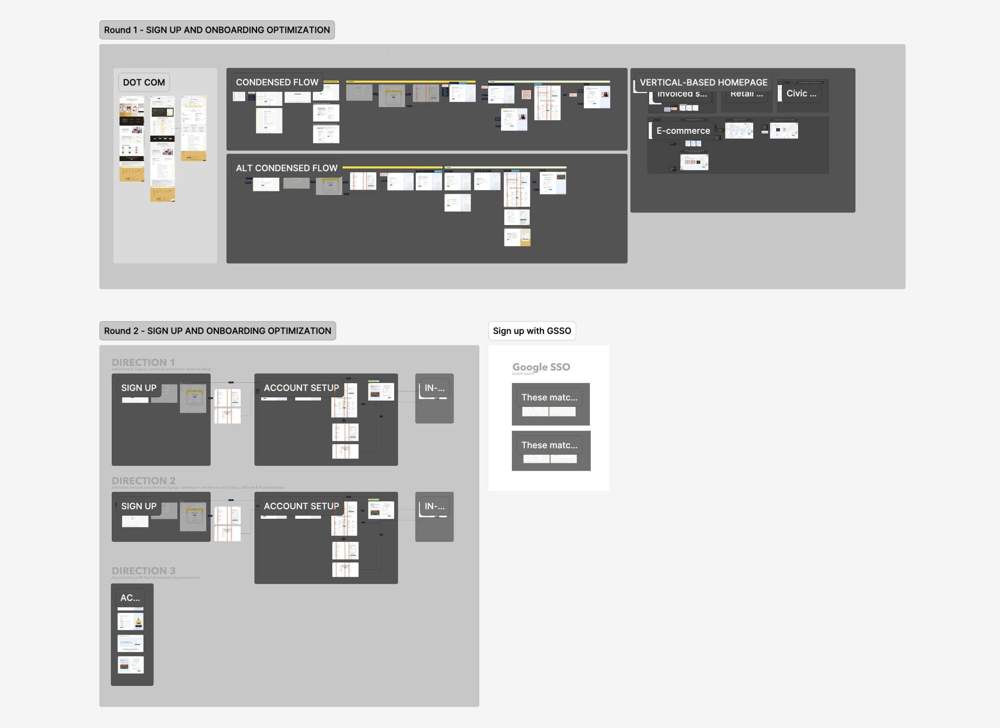
The Figma I presented to C-suite leadership and cross-functional partners — including Sign Up, Onboarding, and adjacent teams — making the case for a data-backed path forward.
On the majority of screens, dropoff was minimal. The outlier was the plan selector, where we saw meaningful dropoff, most likely because users struggled to find the free plan option. That screen wasn't ours to redesign, so we could only flag the issue and make suggested changes. It also drove significant revenue, which meant cutting it was never on the table regardless.
By surfacing three years of experiment history and bringing other teams into the conversation, I was able to reframe the project entirely. The question shifted from "how many screens can we cut?" to "which changes are actually defensible?" That framing protected the screens that were doing real work and gave us a shared standard for every setup decision that followed.
The optimizations
Precise changes. No collateral damage.
What I changed, and what I deliberately left alone
The organizational value of this project wasn't the final screen count. It was demonstrating
that a research-backed approach produces better outcomes than blunt reduction.
Every change I made was defensible with data. Every screen I protected was protected for a reason.
What changed
Removed 2 redundant screens that duplicated information collected at plan selection
Implemented autofill from payment data and email domain where possible
Postponed collecting fields not yet used in the product
Collaborated with Sign Up team to move eligible fields earlier in the journey
Modernized visual treatment to create a seamless marketing-to-product brand transition
What was protected
Brand import screen, backed by lowest drop-off rate and strong downstream conversion data
Plan selector placement, already validated by +20.8% Gross AOV experiment
Human assistance scheduling screen, source of the 54.8% scheduling rate lift
Alongside the structural changes, I took the opportunity to give the flow a visual refresh. The existing designs were functional but plain, and Mailchimp was in the middle of a broader brand redesign.
I introduced a blue gradient aligned with our new color palette and designed custom abstract illustrations using Mailchimp's fictitious brands — an asset library with imagery that our branding team had developed. Wherever possible, I kept text out of the illustrations entirely, since the app is localized into six languages. For the handful of screens where text in the image was unavoidable, I created translated variants that swapped in automatically when a user had the language toggle active.
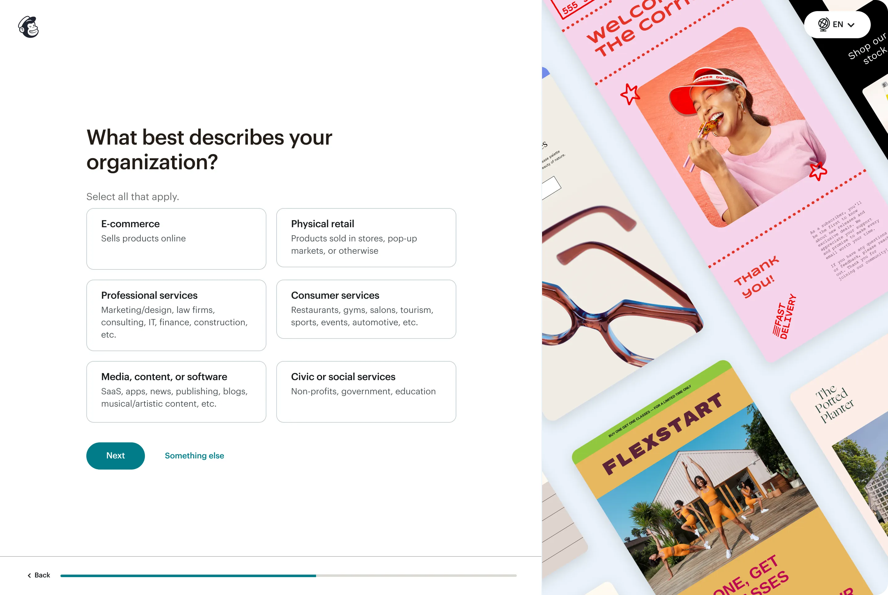
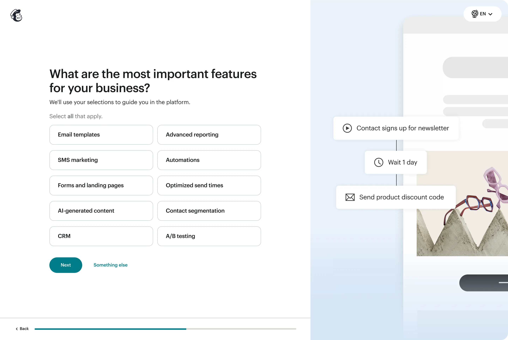
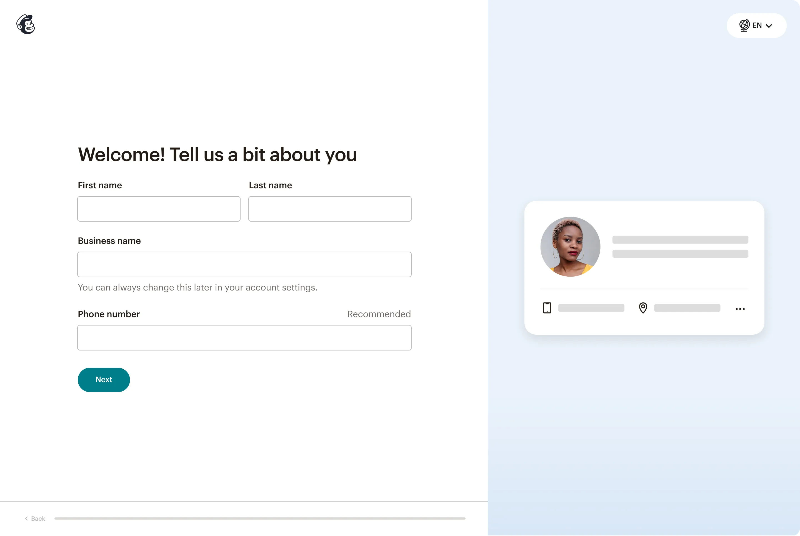
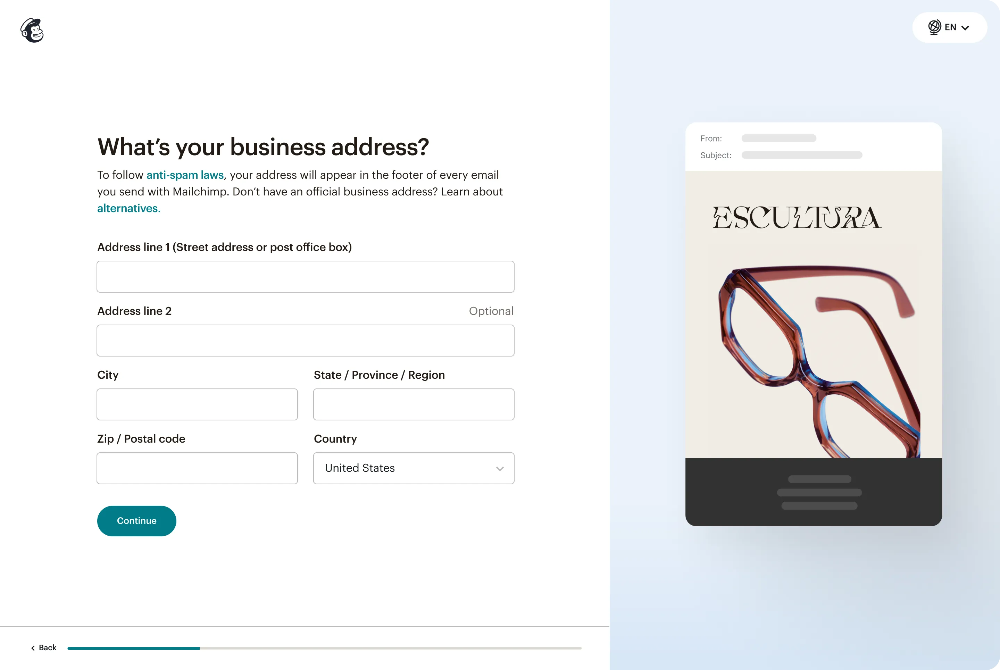
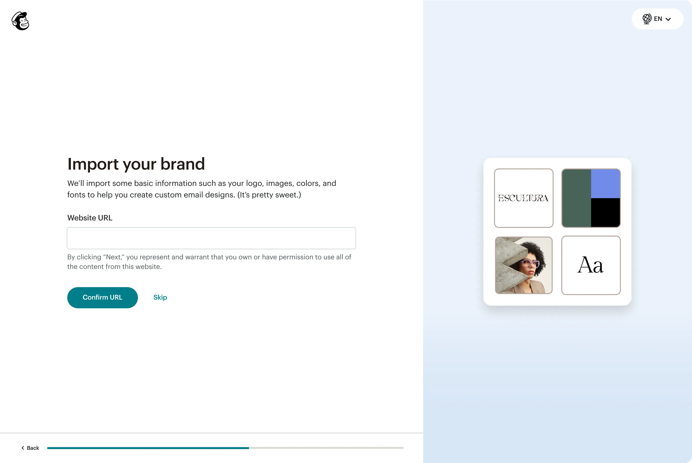
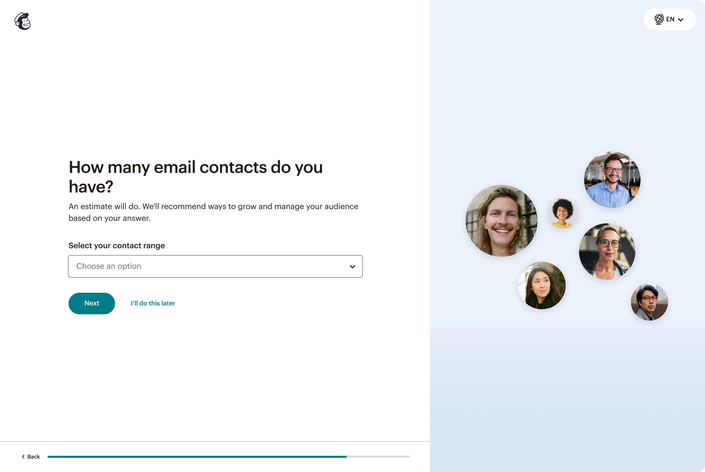
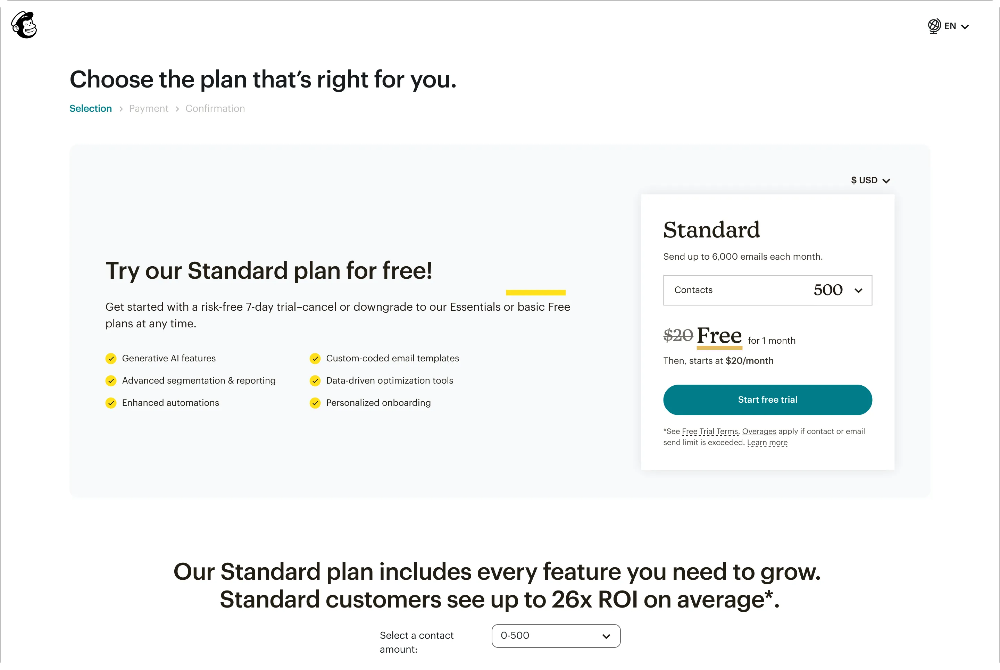
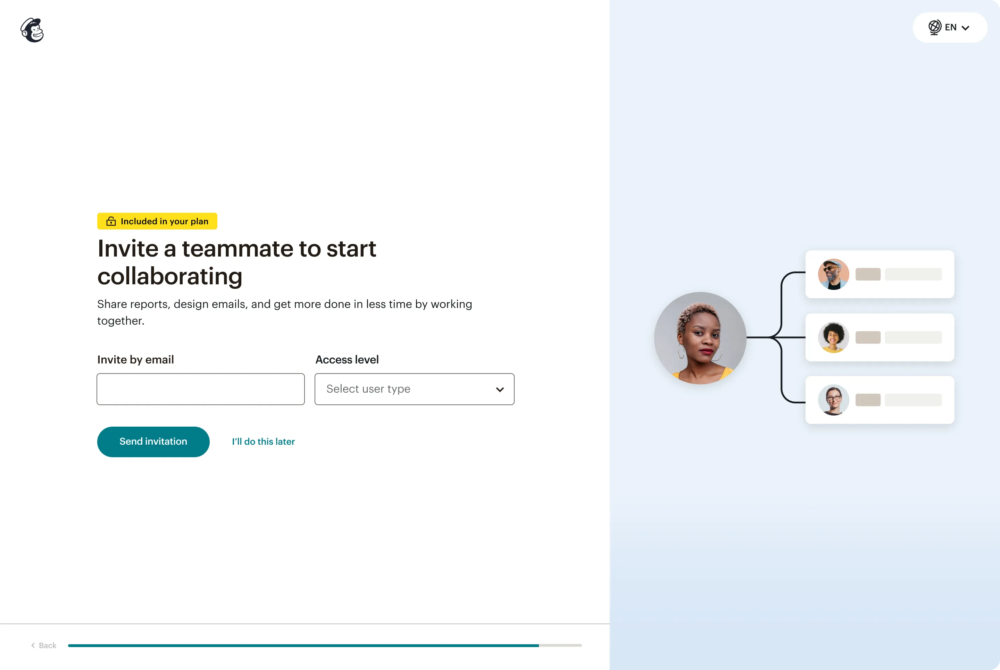
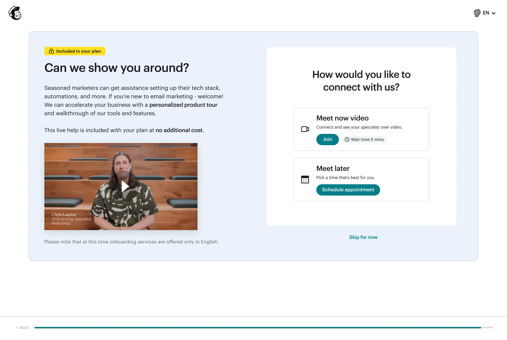
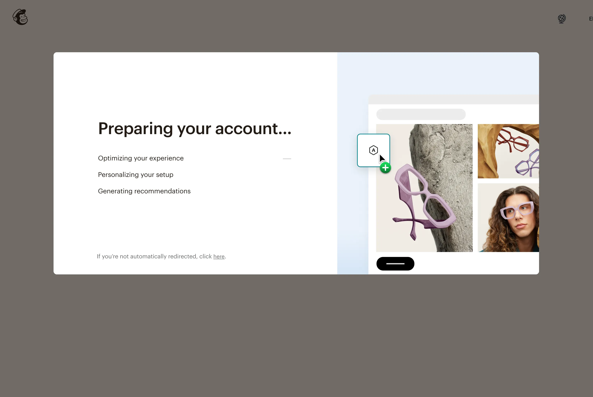
Screens from the redesigned flow
Results
Maintained what mattered. Improved what didn't.
What the post-launch data showed
The goal was never a bigger lift number. It was ensuring the optimizations didn't erode
the gains that three years of experiments had produced. Both the completion rates
and conversion signals held. The visual changes improved brand perception at a
moment when first impressions have an outsized effect on retention.
The experiment data showed that even adding screens hadn't hurt completion rates
when each screen built trust and gathered meaningful data.
The value wasn't in how few screens the flow had. It was in whether each
screen earned its place. That distinction is what the research established,
and what leadership aligned around.
Reflections
What this project taught me.
Data is most powerful when it contradicts the instinct
The screens leadership wanted to cut were the ones users found most memorable.
The experiment history made that case more effectively than any design argument could.
The most valuable skill here wasn't design execution. It was knowing how to
make three years of data legible to people who hadn't lived in it.
Staff-level work is sometimes about what you prevent
There's no dramatic metric win to point to here. The win is that the conversion gains
from previous experiments were preserved through a period of organizational pressure
to remove them. Protecting high-value experiences backed by research is
a contribution that doesn't always show up in a case study headline — but it
affects real users at 60,000 signups a week.
Precision is a harder argument than volume
"We removed two screens and autofilled three fields" is a harder sell than "we cut the
flow in half." Building organizational alignment around a precise, data-backed approach
required framing the restraint as rigor, not timidity.
The framework we established for future decisions was the real deliverable.
Cross-functional alignment is a design artifact
The five teams who aligned on data strategy as a result of this project will make
better decisions about setup for years. That alignment didn't happen in a Figma file.
It happened because I made the research accessible, the tradeoffs explicit,
and the decision criteria shared.